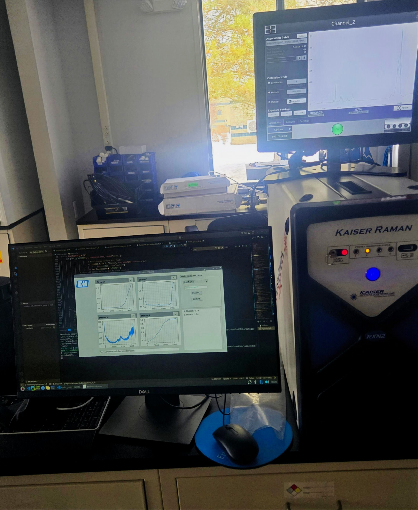
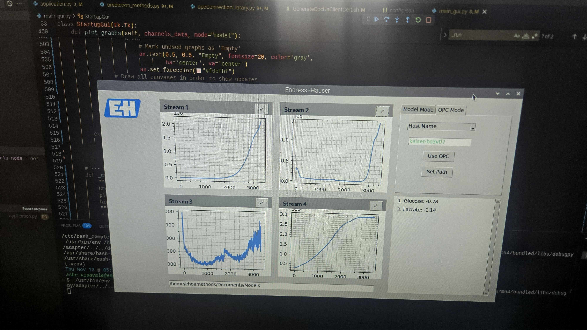

03 / Industrial Telemetry
OPC UA Spectroscopy Dashboard
A monitoring experience for industrial spectroscopy analyzers, bringing live OPC UA telemetry, spectral visualization, and equipment diagnostics into one engineering workflow.

- Focus
- Analyzer monitoring and diagnostics
- Tools
- Python · OPC UA · Spectral visualization · Diagnostics
- Context
- Engineering and customer-support workflows across 30+ analyzers
System overview
Instrument state, in context.
The dashboard connects analyzer signals to a shared monitoring view so engineers can interpret spectra alongside device health and diagnostic information. The result is a clearer starting point for validation, troubleshooting, and customer-support investigations.
- Live measurementsOPC UA telemetry brings current analyzer values into view.
- Spectral contextVisualization helps connect measurements with the signal being produced.
- Health and diagnosticsDevice state and diagnostic details support faster investigation.
- Engineering workflowOne monitoring surface supports validation and customer-support tasks.
